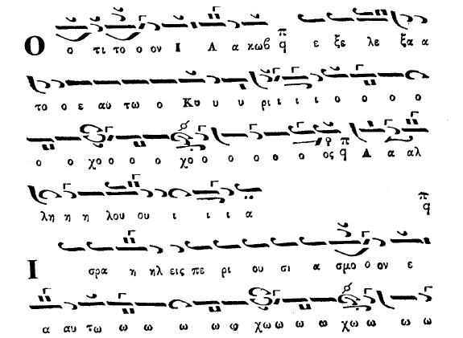
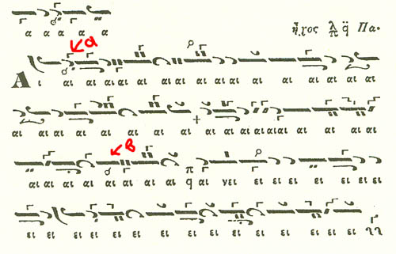
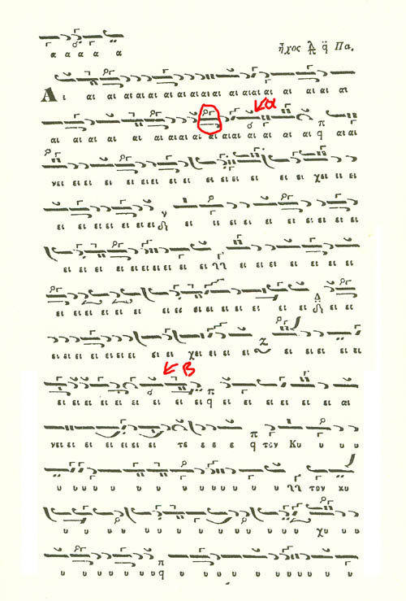

We all know that NH in First/Plagal First Mode is never melodically attracted
by PA, that is, it is never sharp. The interval NH-PA is a major tone large interval.
However, it seems that in certain cases, NH appears to be sharpened even in these
modes. Is there a reason that this is allowed?
Note, the discussion here doesn't include situations where NH is raised due to temporary "chroma" to denote a sorrowful meaning e.g. "Pasa h ktisis hloiouto fovw" or "pros to ekousion pathos" etc.
It also doesn't include situations where we have phrases of Plagal First Mode Minore or Kurdi (enharmonic fthora on GA or on BOY respectively).
Note, the discussion here doesn't include situations where NH is raised due to temporary "chroma" to denote a sorrowful meaning e.g. "Pasa h ktisis hloiouto fovw" or "pros to ekousion pathos" etc.
It also doesn't include situations where we have phrases of Plagal First Mode Minore or Kurdi (enharmonic fthora on GA or on BOY respectively).
Koinonikon "Aineite" (Plagal First Mode)
Petros Byzantios, Mousiki Pandekti, 1851 (vol 4, p. 547)
(click for larger)

D. Koubaroulis: He puts the sharp sign twice
so it can't be a typo.
G. K. Michalakis: Here is my opinion, and I have no traditional theoretical basis for it. I do have, however, some "akousmata" (= some "hearings") in memory to support what I claim (be they from Tsolakidis or Bardas).
This is an excellent example of Parachordi: Pa becomes Di, be it chromatic or diatonic.
Similar examples are to be found in Koukouzelis’ Anoixandaria. Pa may also become "spateheion Ke",
which is an enharmonic chroa, as Dimitrios mentions concerning the "ekousion
Pathos" of contemporary compositions
(which are not the traditional ones) (Holy
Monday Lauda = Ainos).
Polyeleos "Douloi Kyrion" (Plagal First Mode)
Petros Labadarios, Mousiki Pandekti (vol 2)
(click for larger)

{kind=link}
D. Koubaroulis: Here we see the use of the hard chromatic fthora on PA to signify the raised NH.
G. K. Michalakis: In the excerpt of the
plagal first "aneite" that is represented above, the only passage that
is PURE first (or plagal first mode) is that between the martyria "Pa" and the red marking "b". Even what follows
should transiently sound as fourth mode… (parachordi). Note, however, that the equivalent
Zo should not be too
flat, as it may be at times in Fourth mode.
It would be interesting to see what is noted in palaeographical manuscripts…
More examples from Mousike Pandekti
(Ecum. Patriarchate, 1851)
From Gregorios Protopsaltis' slow Koinonikon in Plagal First Mode
(click for larger)

{kind=link}
From Ioannis Protopsaltis Koinonikon in Plagal First Mode. Here we have a short passage with lowered BOY as well (on the second line, circled).
(click for larger)

{kind=link}